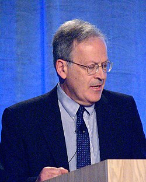

Leslie Valiant | |
|---|---|
 Valiant in 2011 | |
| Born | Leslie Gabriel Valiant 28 March 1949 |
| Education | |
| Known for | |
| Awards |
|
| Scientific career | |
| Fields | Mathematics Theoretical computer science Computational learning theory Theoretical neuroscience |
| Institutions | |
| Thesis | Decision Procedures for Families of Deterministic Pushdown Automata (1974) |
| Mike Paterson[1] | |
Doctoral students | |
| Website | people |
Leslie Gabriel Valiant FRS[4][5] (born 28 March 1949) is a British American[6] computer scientist and computational theorist.[7][8] He was born to a chemical engineer father and a translator mother.[9] He is currently the T. Jefferson Coolidge Professor of Computer Science and Applied Mathematics at Harvard University.[10][11][12][13] Valiant was awarded the Turing Award in 2010, having been described by the A.C.M. as a heroic figure in theoretical computer science and a role model for his courage and creativity in addressing some of the deepest unsolved problems in science; in particular for his "striking combination of depth and breadth".[6]
Valiant was educated at King's College, Cambridge,[14][6] Imperial College London,[14][6] and the University of Warwick where he received a PhD in computer science in 1974.[15][1]
Valiant is world-renowned for his work in Theoretical Computer Science. Among his many contributions to Complexity Theory, he introduced the notion of #P-completeness ("Sharp-P completeness") to explain why enumeration and reliability problems are intractable. He created the Probably Approximately Correct or PAC model of learning that introduced the field of Computational Learning Theory and became a theoretical basis for the development of Machine Learning. He also introduced the concept of Holographic Algorithms inspired by the Quantum Computation model. In computer systems, he is most well-known for introducing the Bulk Synchronous Parallel processing model. Analogous to the von Neumann model for a single computer architecture, BSP has been an influential model for parallel and distributed computing architectures. Recent examples are Google adopting it for computation at large scale via MapReduce, MillWheel,[16] Pregel[17] and Dataflow, and Facebook creating a graph analytics system capable of processing over 1 trillion edges.[18][19] There have also been active open-source projects to add explicit BSP programming as well as other high-performance parallel programming models derived from BSP. Popular examples are Hadoop, Spark, Giraph, Hama, Beam and Dask. His earlier work in Automata Theory includes an algorithm for context-free parsing, which is still the asymptotically fastest known. He also works in Computational Neuroscience focusing on understanding memory and learning.
Valiant's 2013 book is Probably Approximately Correct: Nature's Algorithms for Learning and Prospering in a Complex World.[20] In it he argues, among other things, that evolutionary biology does not explain the rate at which evolution occurs, writing, for example, "The evidence for Darwin's general schema for evolution being essentially correct is convincing to the great majority of biologists. This author has been to enough natural history museums to be convinced himself. All this, however, does not mean the current theory of evolution is adequately explanatory. At present the theory of evolution can offer no account of the rate at which evolution progresses to develop complex mechanisms or to maintain them in changing environments."
Valiant started teaching at Harvard University in 1982 and is currently the T. Jefferson Coolidge Professor of Computer Science and Applied Mathematics in the Harvard School of Engineering and Applied Sciences. Prior to 1982 he taught at Carnegie Mellon University, the University of Leeds, and the University of Edinburgh.
Valiant received the Nevanlinna Prize in 1986, the Knuth Prize in 1997, the EATCS Award in 2008,[21] and the Turing Award in 2010.[22][23] He was elected a Fellow of the Royal Society (FRS) in 1991,[4] a Fellow of the Association for the Advancement of Artificial Intelligence (AAAI) in 1992,[24] and a member of the United States National Academy of Sciences in 2001.[25] Valiant's nomination for the Royal Society reads:
Leslie Valiant has contributed in a decisive way to the growth of theoretical computer science. His work is concerned mainly with quantifying mathematically the resource costs of solving problems on a computer. In early work (1975), he found the asymptotically fastest algorithm known for recognising context-free languages. At the same time, he pioneered the use of communication properties of graphs for analysing computations. In 1977, he defined the notion of ‘sharp-P’ (#P)-completeness and established its utility in classifying counting or enumeration problems according to computational tractability. The first application was to counting matchings (the matrix permanent function). In 1984, Leslie introduced a definition of inductive learning that, for the first time, reconciles computational feasibility with the applicability to nontrivial classes of logical rules to be learned. This notion, later called ‘probably approximately correct learning’, became a theoretical basis for the development of machine learning. In 1989, he formulated the concept of bulk synchronous computation as a unifying principle for parallel computation. Leslie received the Nevanlinna Prize in 1986, and the Turing Award in 2010.[26]
The citation for his A.M. Turing Award reads:
For transformative contributions to the theory of computation, including the theory of probably approximately correct (PAC) learning, the complexity of enumeration and of algebraic computation, and the theory of parallel and distributed computing.[6]
His two sons Gregory Valiant[27] and Paul Valiant[28] are both also theoretical computer scientists.[8]
This article incorporates text available under the CC BY 4.0 license.
.jpg){kind=link}